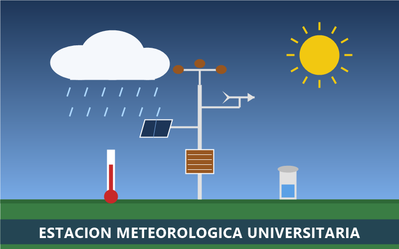

Datos del clima del campus, medidos cada 5 minutos por estudiantes de la facultad.
Pronóstico de la semana
Pronóstico calculado por nuestra estación el para los próximos seis días en el campus.
Pronóstico del campus · 24 al 29 de septiembre
Día
Máxima
Mínima
Humedad
Prob. de lluvia
Viento
Condición
Jueves 24
31 °C
24 °C
72 %
20 %
12 km/h
Parcialmente nublado
Viernes 25
30 °C
24 °C
78 %
40 %
14 km/h
Chubascos por la tarde
Sábado 26
28 °C
23 °C
88 %
80 %
22 km/h
Tormenta eléctrica
Domingo 27
27 °C
23 °C
85 %
60 %
18 km/h
Lluvia moderada
Lunes 28
29 °C
24 °C
80 %
30 %
10 km/h
Nublado
Martes 29
31 °C
24 °C
74 %
20 %
9 km/h
Soleado
Promedio
29.3 °C
23.7 °C
79.5 %
41.7 %
14.2 km/h
Semana lluviosa
Fuente: sensores de la estación y modelo de pronóstico propio, actualizado cada 6 horas.
Noticias de la estación
Septiembre rompe el récord de lluvia
El pluviómetro registró 312 mm de lluvia en lo que va de septiembre, el valor más alto desde que la estación empezó a medir en 2019. Eso equivale a 312 litros de agua por cada m2 del campus.
Según el Boletín Climático del Campus, la temporada lluviosa llegó este año con más fuerza que nunca.
Nuevo sensor de calidad del aire
Desde el medimos partículas PM2.5 y dióxido de carbono (CO2). La instalación estaba prevista para el 1 de septiembre, pero se hizo el 15 de septiembre por las lluvias.
Consulta los datos en vivo en la pantalla del vestíbulo de la facultad. Sensor donado por la asociación de egresados.
Instrumentos y glosario
¿Cada cuánto se actualizan los datos?
Los sensores envían una lectura cada 5 minutos al servidor de la facultad. El pronóstico de la semana se recalcula cada 6 horas con los datos acumulados.
¿Qué mide cada instrumento?
Anemómetro
Mide la velocidad del viento con tres cazoletas que giran; la veleta a su lado indica la dirección.
Pluviómetro
Recoge la lluvia y la mide en milímetros; 1 mm equivale a 1 litro por metro cuadrado.
Barómetro
Mide la presión atmosférica; cuando baja rápido, suele acercarse una tormenta.
Higrómetro
Mide la humedad relativa, es decir, cuánto vapor de agua hay en el aire.
Cómo leer el pluviómetro manual
Revisa el pluviómetro todos los días a las 7:00 a. m.
Lee el nivel del agua a la altura de los ojos para no equivocarte.
Anota la cantidad en milímetros en la bitácora de la estación.
Vacía el recipiente y vuelve a colocarlo en su base.
Multimedia
Nuestra estación

La estación mide temperatura, humedad, presión, lluvia y viento cada 5 minutos en la azotea de la facultad.
Timelapse de nubes sobre el campus
Ubicación de la estación
Suscríbete a las alertas del clima
Regístrate y te avisaremos por correo o SMS cuando se acerque una tormenta, haga mucho calor o sople viento fuerte en el campus. Presiona Enter o el botón para enviar. Tu código de suscripción es METEO-2026.